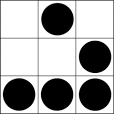

Phase 3: Glider Transmission
In 2003, this five-cell pattern was proposed by Eric S. Raymond as a symbol of the hacker subculture. It comes from a cellular automaton where life evolves by rules, not chance. It moves, it persists, and it spreads — like hackers do.
What is the name of this symbol?
